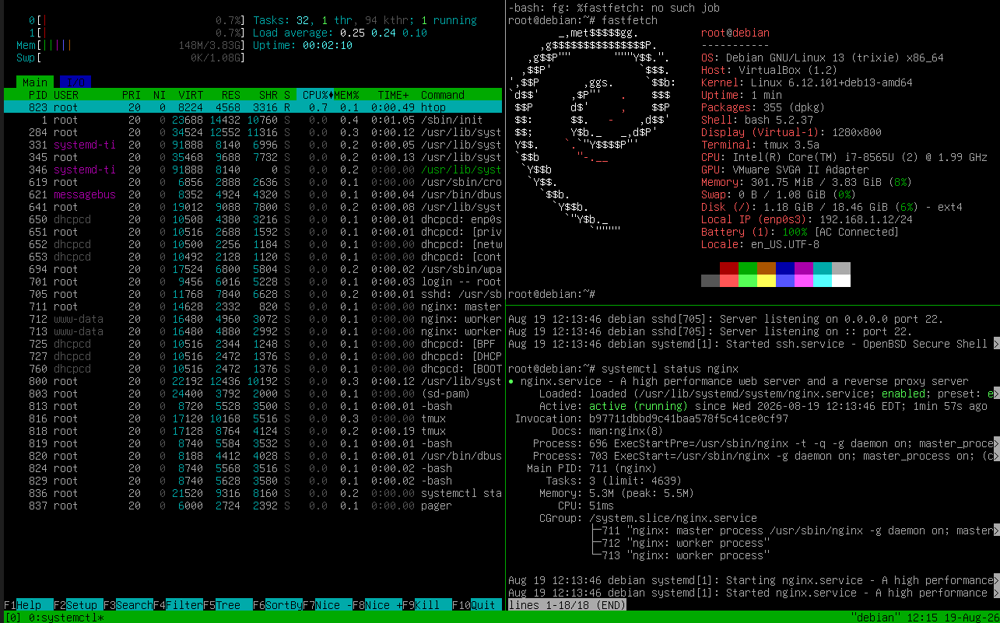

Hands-on networking and infrastructure deployment: Linux server administration, service management, system monitoring, and network configuration on Debian OS.
Multi-pane system administration workflow using tmux. Real-time resource tracking via htop, system specifications via fastfetch, and Nginx reverse proxy service status verification.

Figure: Debian GNU/Linux 13 (Trixie) server dashboard with active Nginx service & real-time resource monitor.